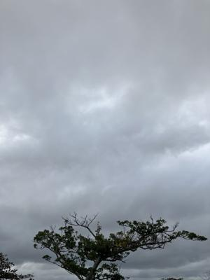
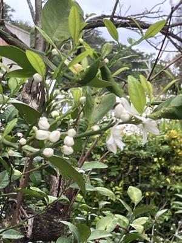

うるがいの話 ある日
最新: USBメモリ物語【うるがいの話 ある日】とは 一日だけのプログです
『うるがいの話』の最新一日だけのプログで、通信料が少なく経済的だ。カニの画像をクリックすると全ての日付が載る『うるがいの話』サイトを表示します
|
|
【うるがいの話】 うるがい(ｳﾙｶﾞｲ urugai)とは、『もずくがに』の名前でとても大きくなります。 |
|---|---|
|
|
【カミマヤーの話】 猫のことを方言でマヤーといいます。カミマヤー（kamimayaa）とは、神の猫のことです。 |
|
【たながぁの音楽】 たながぁ（ﾀﾅｶﾞｰ tanagaa）とは手長えびのことで、何種類かあり大きいのは車 エビぐらいになります。 |

|
【ぶながぁの話】 ぶながぁ(ﾌﾞﾅｶﾞｰ bunagaa)とは、赤い髪の毛、赤い身体、そして身長は１ｍ２０ｃｍ ぐらい、川の蟹を食べているの目撃された。場所は沖縄県国頭郡大宜味村のと ある村僕の隣近所に住んでいる爺さんから、聞いた話です。 |
|
|
【ギーマの話】 ギーマ(giima)とは、山原の里山に咲くスズランに似た、 花を付けます。実は食べられます、 気が付くと口の周りが紫になっています。 |
2024年02月24日 (土）USBメモリ物語
15:27

ワイシャツ姿の中年男性のために、たまたま持っていたＵＳＢメモリを使っ
て自習するソフト（１．７２ＧＢ７－ｚｉｐで圧縮）をＵＳＢメモリで解凍
を試みた。終了見込みが、１時間から、２時間へ変わり、そのうち６時間と
延びていくこりゃあダメだと、キャンセルする。で、中途半端に展開された
フォルダを削除したら、これまたトンでもなく遅い！。またしても、キャン
セルする。自宅で、二日にわたり、なんとか私の使っている３２ＧＢのＵＳ
Ｂで展開（２．７９ＧＢ）したフォルダをつくりたいと努力した。結論、ま
ったく話にならない！。ＵＳＢメモリスティック型のＳＳＤがあれば・・・
買わない、そもそも問題のパソコンにＰＩＮの問題が解決すれば、なんら必
要ないことである。

1.ＵＳＢの初期化(diskpart) FAT32からNTFS (下が確実な方法です）
DISKPART <- これでユーティリティが起動します。
LIST DISK
SELECT DISK 2 (交換 2 USBフラッシュ ドライブ番号が記載されています。
この例では 2 を使用しています)。
CLEAN <- ドライブが消去されます。
CREATE PARTITION PRIMARY <- パーティションを作成します。
SELECT PARTITION 1 <- パーティション1を選択します。
ACTIVE <- 現在のパーティションをアクティブとしてマークします。
FORMAT FS=NTFS QUICK <- パーティションをフォーマットします。
EXIT
2.できたUSBで、7-zipで解凍 終了見込みが６０時間以上と表示された！
３時間以上、試したがあほらしくなってキャンセルした
3.MiniTool ShadowMaker Freeというソフトで展開したフォルダをＵＳＢへ
４時間３５分 正常に終了したが、退避形式がイメージデータだった。
4.高速PC3で展開したフォルダをＵＳＢへ、コピーアンドペースト
２日以上・・・・・、なに！ヤメヤメ
分かったこと、ＦＰＤがとんでも遅いことは分かっていたが、ＵＳＢもそれ
なりに遅い媒体である。以上
１５時２２分 ビットコインの総資産 ￥２２、２４１（↓１０）